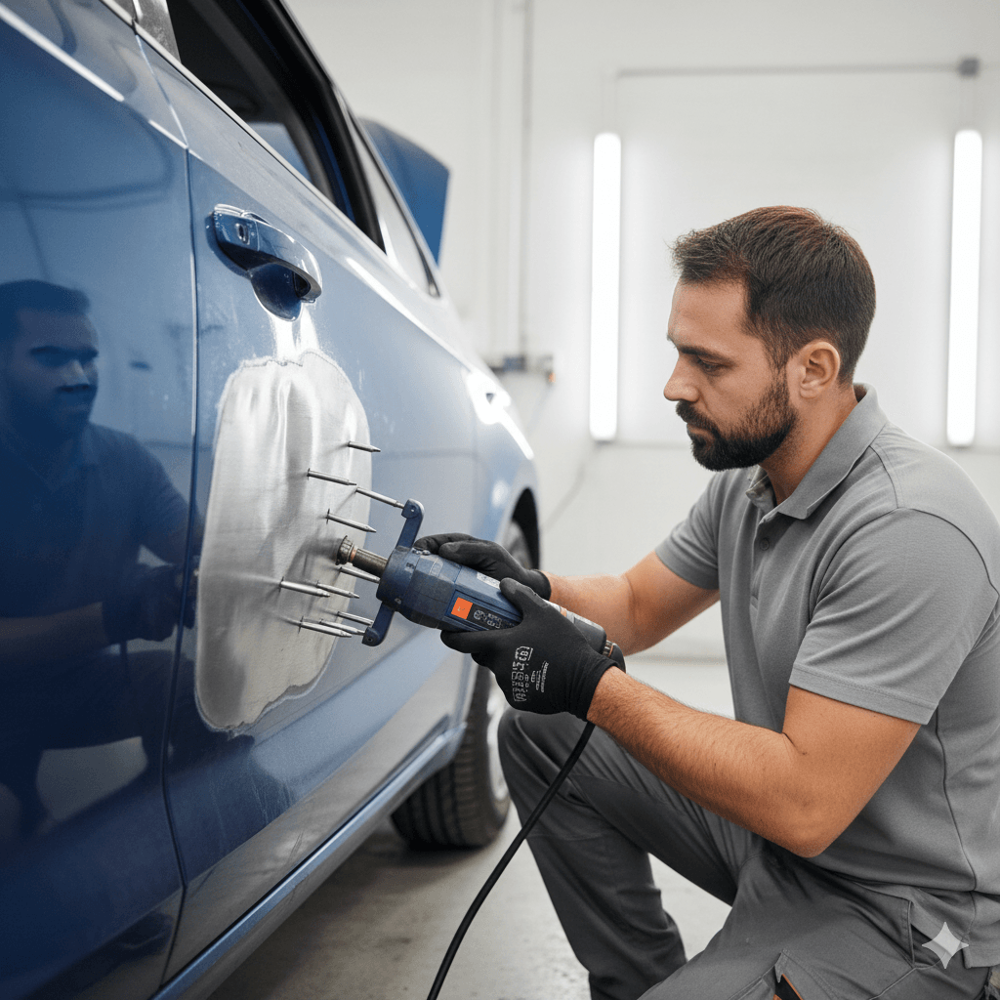

Introduction
If you are searching for professional body denting Doha services, you already know how quickly a car's appearance can suffer in Qatar's busy parking environments. From tight spaces at Villaggio and Landmark malls to crowded supermarket lots in Al Sadd and West Bay, dents and dings happen to careful drivers every single week. A small crease on a door or a shallow depression on a fender may seem cosmetic, but untreated damage can crack paint, trap moisture, and reduce resale value long before you plan to sell. At Dohar Car Repair, we specialise in expert dent removal, panel beating, and paintless dent repair Qatar motorists rely on to restore factory-smooth panels without unnecessary cost or downtime.
This complete guide explains why body denting matters in Doha, the most common causes of panel damage locally — including parking lot incidents, shopping trolley marks, rare hail events, and minor collisions — how to spot warning signs before rust sets in, the difference between paintless dent repair (PDR) and traditional panel beating, when repainting is required, what professional repair looks like step by step, realistic costs in QAR, and why thousands of Qatar drivers trust our workshop for car body repair Doha work that lasts. Whether you drive a daily sedan, a family SUV, or a premium European vehicle, the information below will help you make the right repair decision the first time.

Why Body Denting Matters in Qatar
Body panels do more than define your car's shape. They protect structural components, channel airflow, and shield inner metal from corrosion. In Qatar's climate, even a minor dent that breaks the clear coat can become a serious problem within months. Intense summer heat causes paint to expand and contract repeatedly; fine desert dust works into micro-cracks; and occasional humidity during cooler months can accelerate oxidation beneath compromised surfaces. Professional dent removal Qatar services address damage before it spreads, preserving both appearance and long-term body integrity.
Ignoring dents also affects resale and insurance outcomes. Buyers in Doha's competitive used-car market inspect panel gaps, paint texture, and filler evidence closely. Insurance assessors note unrepaired damage when evaluating future claims. A properly repaired panel — whether through PDR or conventional panel beating Doha techniques — maintains your vehicle's value and gives you confidence every time you park in a tight space again.
- Corrosion prevention: Restoring panel shape and paint seals metal against Qatar's dust and moisture cycles
- Resale value protection: Clean bodywork commands higher prices and faster sales
- Structural awareness: Professional inspection reveals hidden frame or reinforcement damage after impacts
- Cost control: Early PDR is far cheaper than full panel replacement and respray later
- Peace of mind: You know the repair was done correctly, not masked with filler and hope
Qatar Heat & Paint Around Repairs
Surface temperatures on parked cars in Doha can exceed 70°C in direct sun. Heat stresses paint films around dented areas, making micro-cracks more likely to spread. After any body denting work, we advise shaded parking and gentle washing for the first weeks so cured paint and flexed metal stabilise properly in Gulf conditions.
Common Causes of Dents and Panel Damage in Doha
Understanding how dents happen helps you prevent repeat damage and choose the right repair method. These are the scenarios our technicians see most often at our Doha workshop:
Parking Lot Dings and Door Impacts
Tight parking bays are everywhere — from office towers on Corniche to residential compounds in Al Waab and Pearl-Qatar. A neighbouring car door swung without care is the number-one cause of creased panels and chipped paint. Even soft-impact dings can leave a visible outline on aluminium or steel doors, especially on lighter colours that show shadow lines clearly.
Mall Parking — Villaggio, Landmark, and City Center
Weekend mall traffic concentrates hundreds of vehicles into multi-storey car parks with narrow turns and concrete pillars. Body denting Doha enquiries spike after busy shopping periods when trolley bumps, pillar scrapes, and double-parked manoeuvres leave fenders and quarter panels marked. Basement levels with low clearance also catch roof rails and hatches on taller SUVs.
Shopping Trolley Marks
Runaway trolleys in open-air supermarket lots strike bumpers and rear panels with surprising force. Plastic bumper covers often flex back but retain a dent; metal panels may show a sharp point impact that is ideal for paintless dent repair if addressed quickly before paint fractures spread.
Minor Collisions and Rear-End Taps
Low-speed bumps in traffic queues along Salwa Road, D-Ring, or near roundabouts frequently damage bumpers, boot lids, and bonnet edges. Even when speed is minimal, modern panels crumple by design. What looks like a small scuff may hide mounting bracket deformation that affects panel alignment and sensor function on newer cars.
Rare Hail and Storm Events
Qatar does not see hail often, but when thunderstorms do arrive — sometimes with short, intense bursts — vehicles left exposed can collect dozens of shallow dents across the roof, bonnet, and boot. Multiple-panel PDR campaigns are common after such events, provided paint has not cracked at impact points.
Desert Dust, Sand, and Off-Road Contact
Weekend trips inland or parking near construction sites expose cars to blowing sand that does not dent metal directly but scratches clear coat when wiped. Combined with existing panel deformation, abrasive cleaning can worsen visible damage. Off-road brush contact may crease wheel arches and door sills on 4x4 vehicles popular across Qatar.

Warning Signs You Need Body Denting or Panel Repair
Not every mark requires a full respray. Some damage is urgent; other times paintless methods work best if you act early. Watch for these practical signals that your car needs professional attention:
- Visible crease or depression: Any dent that catches light at an angle will not improve on its own — it usually worsens as metal work-hardens
- Cracked, chipped, or flaking paint: Bare metal exposed to Qatar air needs sealing quickly to prevent rust bloom
- Panel gap changes: Doors, bonnet, or boot that no longer align evenly may indicate deeper structural or hinge damage
- Colour mismatch or rippled paint: Previous cheap repairs with excessive filler show up as waves in reflected light
- Rattles or wind noise after an impact: Trim clips and inner bracing may be loose even when outer skin looks minor
- Sensor or camera faults: Parking aids and ADAS components mounted in bumpers can misalign after low-speed hits
- Multiple small dents on one panel: Hail or trolley clusters often qualify for efficient PDR pricing when paint is intact
If damage extends beyond cosmetic panels — bent rails, airbag deployment, or fluid leaks — schedule a full inspection through our car repair service in Doha. Severe accident damage may be uneconomical to restore; in those cases some owners explore selling an accident or damaged car in Qatar instead of investing in major structural rebuilds.
How Professionals Fix Dents — PDR vs Panel Beating
Modern car body repair Doha workshops offer two primary paths: paintless dent repair for eligible damage, and traditional panel beating plus refinishing when paint or metal integrity is compromised. Choosing correctly saves money and preserves original factory paint — a big plus for lease returns and premium vehicles.
Paintless Dent Repair (PDR)
Paintless dent repair Qatar technicians access the back side of a panel — or use specialised glue-pull tools from the outside — to massage metal back to its original contour without filler or spray paint. PDR works best on shallow dents where paint is unbroken, panel access is available, and metal has not been previously repaired with thick body filler. Benefits include lower cost, same-day turnaround for small jobs, and no colour-matching risk.
Traditional Panel Beating and Refinishing
When paint is cracked, edges are sharp, or metal is stretched beyond elastic limits, panel beating Doha specialists reshape the panel using hammers, dollies, and pulling equipment, then apply filler only where necessary before priming and painting. This route is essential for collision creases, deep door impacts, and areas where corrosion has already started. Quality refinishing includes proper masking, colour matching, clear coat application, and curing suited to Gulf heat.
When repainting is required — whether for a single panel blend or a full side respray — our team coordinates with dedicated spray booth processes. Learn more in our guide to car painting in Doha, Qatar, which covers colour matching, clear coat durability, and post-paint care in desert climates.
Professional Body Denting Process
A proper repair is more than pushing metal until it looks flat. Here is the process our technicians follow for every body denting appointment at Dohar Car Repair:
-
Damage assessment and repair method selection
We inspect dent depth, paint condition, panel material (steel, aluminium, plastic), prior repair history, and access points. You receive an honest recommendation between PDR, conventional panel beating, or panel replacement.
-
Panel preparation and access
Interior trim, wheel arch liners, or door cards are carefully removed when needed for PDR tool paths. For conventional repair, damaged sections are cleaned and stripped to bare metal where paint is failing.
-
Metal straightening and dent removal
Technicians massage metal using precision PDR rods, pulling tabs, or hammer-and-dolly panel beating techniques — working gradually to avoid overstretching and high spots that show through paint.
-
Surface finishing and filler application (if required)
When paint is broken or metal is imperfect after straightening, thin skim filler is applied and block-sanded to restore correct contours. We avoid heavy filler build-ups that fail in Qatar heat.
-
Priming, painting, and clear coat (when needed)
Panels receive corrosion-resistant primer, colour-matched base coat, and UV-stable clear coat baked or flashed according to product specifications for durability in direct sun.
-
Reassembly, quality check, and customer handover
Trim is refitted, panel gaps are verified, and the repair is inspected under varied lighting angles. We explain curing times, washing guidance, and any follow-up care before you drive away.
"The best body denting job is the one you cannot see — factory panel lines, no orange peel, and metal restored rather than hidden. In Qatar's heat, shortcuts with thick filler always show up later."
PDR vs Traditional — Quick Guide
Choose PDR when paint is intact and the dent is shallow with good rear access — typical for parking dings and hail. Choose panel beating plus paint when cracks, rust, sharp creases, or previous filler are present. We always quote both options when both are viable so you can decide based on budget and timeline.
Maintenance Tips After Body Denting
Protect your repaired panels and reduce future dents with these practical habits between workshop visits:
- Park defensively: Choose end bays, avoid tight spots next to large vehicles, and use pillar-less spaces when available
- Wait before aggressive washing: Fresh paint needs curing time — hand wash gently for the first two to three weeks
- Keep shaded when possible: Reduces thermal stress on newly painted panels during Qatar summers
- Address new dings quickly: Early PDR prevents paint fracture and keeps repair costs low
- Use door edge guards thoughtfully: Quality mouldings reduce door-to-door contact in mall car parks
- Do not lean or sit on panels: Roof and bonnet dents from weight are common and entirely preventable
- Apply wax or ceramic protection after cure: Adds UV defence and makes dust removal easier without scratching
Pair body care with overall vehicle health. Browse more maintenance advice on our blog, and learn about our workshop standards on the about us page. Complementary services such as oil change in Doha and brake repair can be scheduled during longer bodywork visits to save you a second trip.
Common Mistakes Drivers Make
These errors cost Qatar drivers more money and produce worse results than timely professional repair:
- Delaying repair until rust appears: Once corrosion starts, PDR alone is no longer enough — sanding, filler, and paint add cost
- DIY suction cup kits on sharp dents: Home tools often create high crowns and crack paint on modern thin-gauge panels
- Choosing the cheapest quote without asking method: Heavy filler jobs look fine for weeks then shrink and crack in heat
- Ignoring panel gap changes: Cosmetic focus on one dent while hinges or mounts remain bent leads to repeat damage
- Demanding PDR when paint is broken: Forcing paintless repair on cracked surfaces causes flaking and warranty disputes
- Partial resprays with poor blending: Mismatched colour under Doha sunlight is obvious — proper blend technique matters
- Skipping insurance documentation: Not photographing damage and estimates can complicate third-party claims later

Body Denting Cost in Qatar (QAR)
Prices depend on dent size, panel location, repair method (PDR vs conventional), paint condition, vehicle type, and whether trim removal is required. Typical Doha market ranges for standard passenger vehicles:
- Single small PDR ding (door or fender): 150–350 QAR
- Multiple PDR dents on one panel: 300–700 QAR
- Hail damage PDR (per panel, moderate): 250–600 QAR
- Conventional panel beating (no paint): 200–500 QAR
- Panel repair with partial respray: 600–1,500 QAR
- Full panel respray with blend: 800–2,200 QAR
- Bumper repair and refinish: 400–1,200 QAR
- Luxury / aluminium body PDR or repair: 500–2,500+ QAR
We provide clear quotes after physical inspection — photos help for initial estimates but final pricing requires seeing dent depth and paint up close. If damage is extensive from a major collision, repair totals may exceed vehicle value; we discuss transparent options including full restoration versus exploring buying or selling accident cars in Qatar through related services when repair no longer makes financial sense.
Value Over Quick Fixes
The lowest panel beating quote is not always the best deal if it relies on thick filler, single-stage paint, or no corrosion treatment. Ask what method will be used, whether OEM-style colour matching is included, and what warranty applies — then compare properly.
Why Choose Dohar Car Repair
Drivers across Doha choose Dohar Car Repair for body denting because we combine skilled metalwork with honest communication:
- 15+ years of local experience understanding Qatar parking risks, dust exposure, and heat effects on paint
- PDR and conventional capability — we recommend the right method, not the most profitable one
- All makes and models — Japanese, Korean, European, American, and popular Gulf-spec SUVs
- Quality materials and colour matching suited to intense sun and long-term durability
- Transparent pricing in QAR before work begins — no surprise extras at collection
- Inspection mindset so hidden structural or sensor issues are flagged early
- Convenient contact via phone, WhatsApp, or our contact page
- Full workshop capability linking bodywork with car painting, mechanical repair, and diagnostics when needed
Our location serves customers from central Doha and surrounding areas who want dependable turnaround, fair pricing, and results that still look correct months later under harsh Gulf sunlight.
FAQ
What is the difference between PDR and traditional panel beating?
Paintless dent repair reshapes metal from behind or with glue-pull tools without repainting — ideal for shallow dents with intact paint. Traditional panel beating addresses sharper, deeper, or painted-damaged dents by straightening metal and refinishing the surface. Our technicians assess each dent individually and explain which approach delivers a lasting result for your specific damage.
Can all dents be fixed with paintless dent repair in Qatar?
No. PDR suits many parking dings, hail dents, and trolley marks where paint is unbroken and access is possible. It is not suitable for creased edges, cracked paint, rust, or areas with previous heavy filler. Attempting PDR on unsuitable damage can worsen the panel. We tell you upfront when conventional repair or replacement is the smarter path.
How long does body denting take at Dohar Car Repair?
Single PDR dings are often completed within one to three hours. Multiple-panel hail repair may take one to two days. Conventional panel beating with paint typically requires two to five days depending on curing schedules, blend scope, and parts availability. We provide a realistic timeline at quote stage.
Will my insurance cover dent repair in Doha?
Comprehensive policies often cover accident-related body damage subject to excess and claim history. Minor parking dings where no third party is involved are usually out-of-pocket unless you have specific coverage. We can document damage with photos and itemised estimates to support your insurer's process when a claim applies.
Does heat in Qatar affect paint after dent repair?
Yes. High ambient and surface temperatures stress fresh paint films during curing. We use products and processes suited to Gulf conditions and advise avoiding harsh chemicals, automated brush washes, and prolonged direct sun on newly painted panels for the first few weeks. Properly cured OEM-style finishes handle Qatar heat well for years when maintained.
When should I consider selling instead of repairing severe body damage?
If structural components, multiple airbags, or extensive frame damage are involved, repair costs can approach or exceed market value — especially on older vehicles. When that happens, restoring may not be financially wise. We give honest assessments and can point you toward options such as accident car services in Qatar when selling or disposing makes more sense than a major rebuild.
Conclusion
Timely body denting Doha service protects more than your car's appearance — it guards against rust, preserves resale value, and restores the pride you feel every time you walk up to your vehicle. From mall parking dings at Villaggio and Landmark to hail clusters and minor collision creases, the right combination of paintless dent repair and skilled panel beating delivers factory-quality results without paying for work you do not need. Qatar's heat and desert dust make professional repair and proper paint care essential, not optional.
Ready to restore your panels? Contact Dohar Car Repair for expert dent removal and car body repair. Call 0097472223959, message us on WhatsApp, or visit our contact page to book a free damage assessment. Drive with confidence — start with bodywork that looks as good as the day you bought it.